After Skagway the sea adventure truly began. The Nieuw Amsterdam turned her bow toward the great wilderness of Glacier Bay — a place so wild and remote that the National Park Service must grant the ship special permission to enter. Not every ship is allowed. The Charmings were among the fortunate few.
For two days the ship was entirely at sea, threading through the narrow channels and open water of the Alaskan coast. Snow fell in love with the sea creatures — sea otters floating on their backs, seals watching from their rocky perches — and they waved to her. Prince was transfixed by the ice: the great drifting blocks that had broken from glaciers miles away and now floated silently past the ship like slow-moving islands.
The Creatures of the Sea
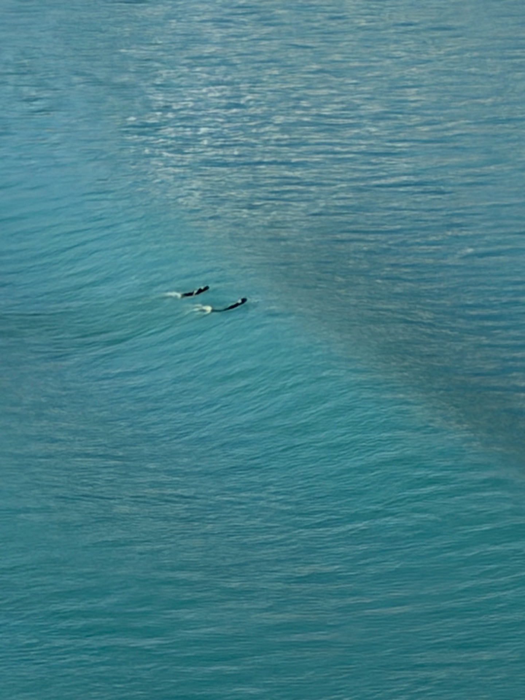
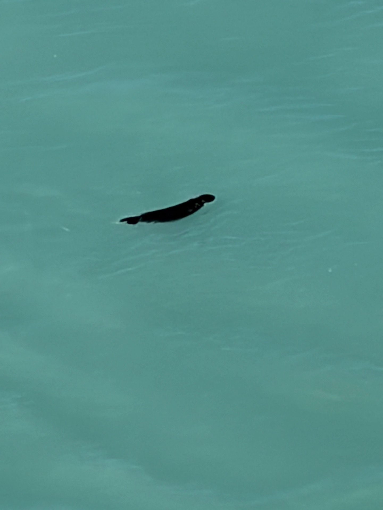
Glacier Bay
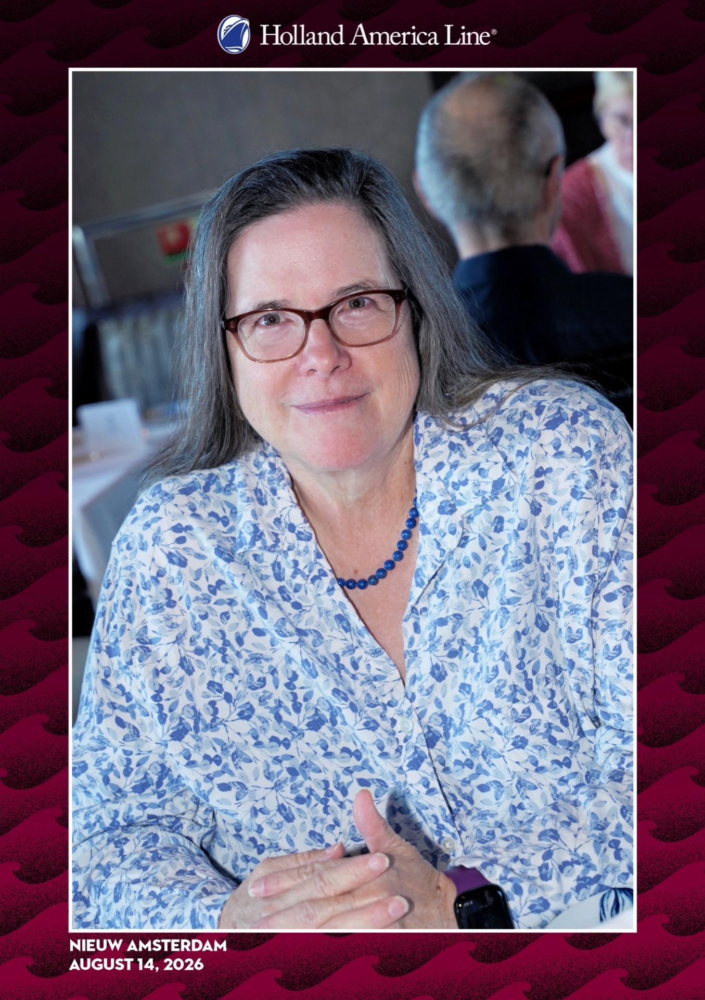
Glacier Bay opened up before them like a fairy tale illustration — mountains rising straight from the water on all sides, their peaks lost in cloud, their bases wrapped in forest and ice. The water was that impossible flat grey-green of glacially fed bays, and the air was cold and clean in a way that city air never quite manages.
The Charmings took to the deck and did not leave for a long while. There was simply too much to look at — every direction offered something vast and unhurried, a reminder that the world was here long before any kingdom and will be here long after. Snow stood at the rail and watched it all go by, and for once there was no need to say anything at all.
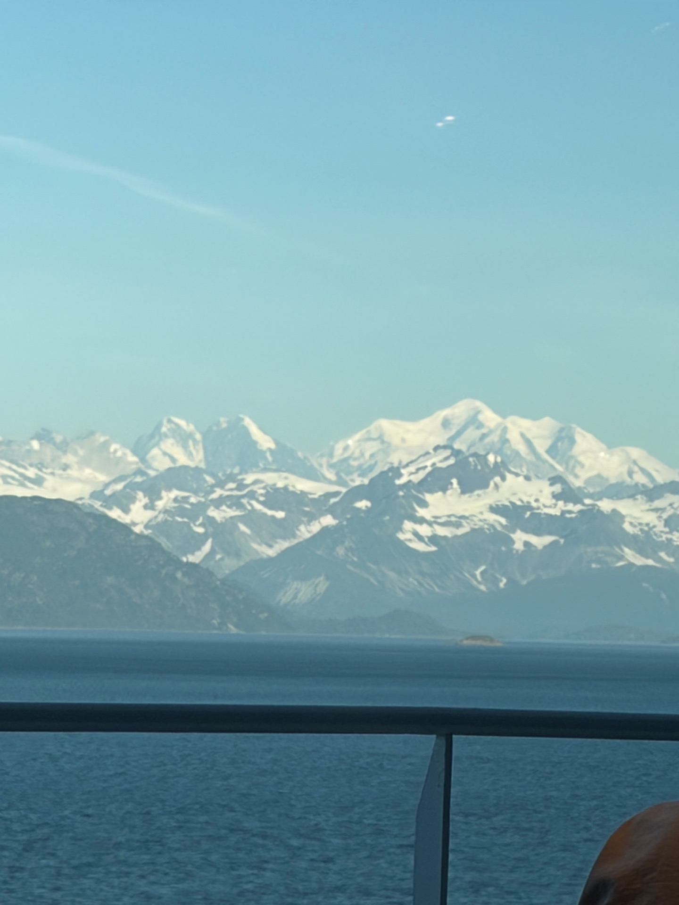
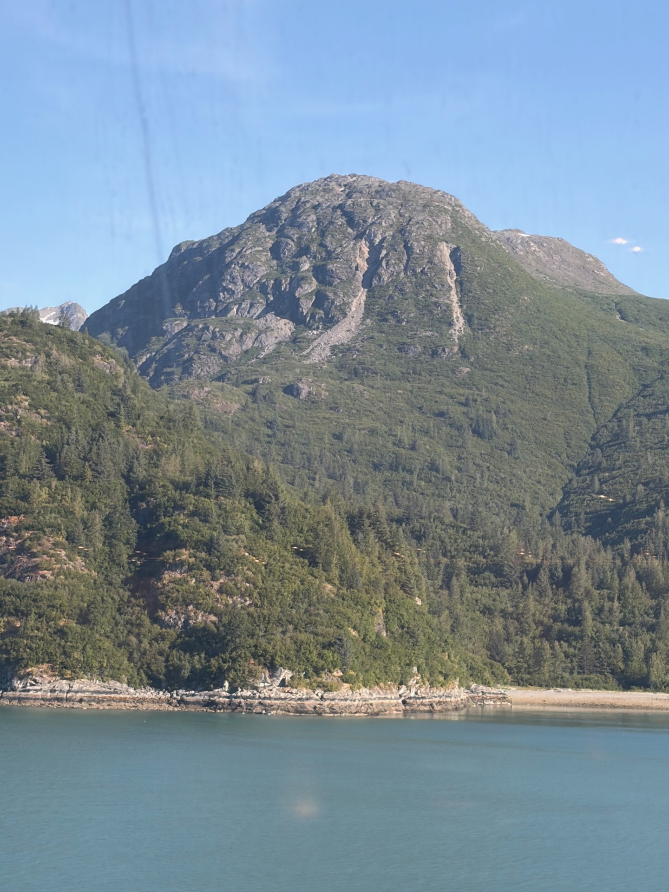
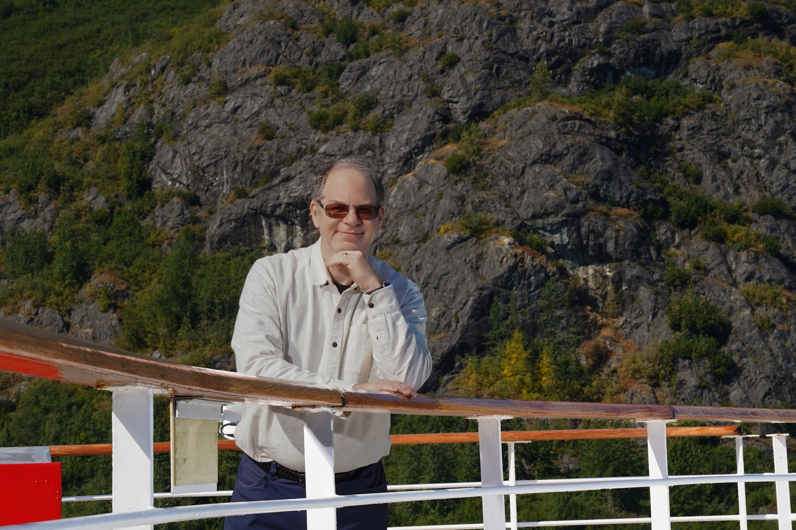
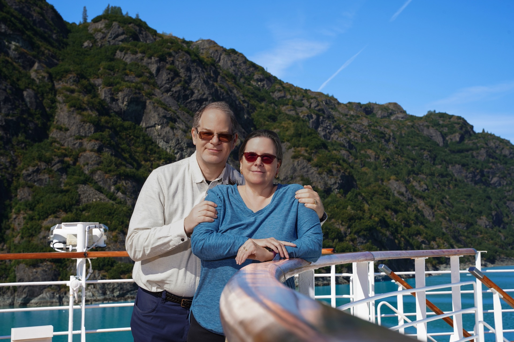
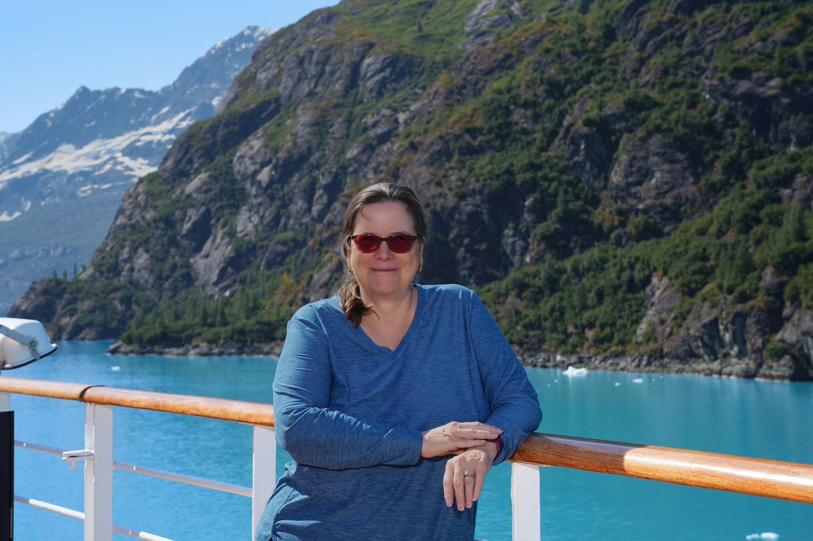
College Fjord & Harvard Glacier
The following day brought College Fjord — a narrow passage lined with glaciers, each one named for an Ivy League university by the expedition that first charted them in 1899. At the head of the fjord sat the grandest of them all: Harvard Glacier, a towering wall of blue-white ice that calves directly into the sea. Prince watched, transfixed, as great blocks broke from the face and crashed into the water below with a sound like distant thunder.
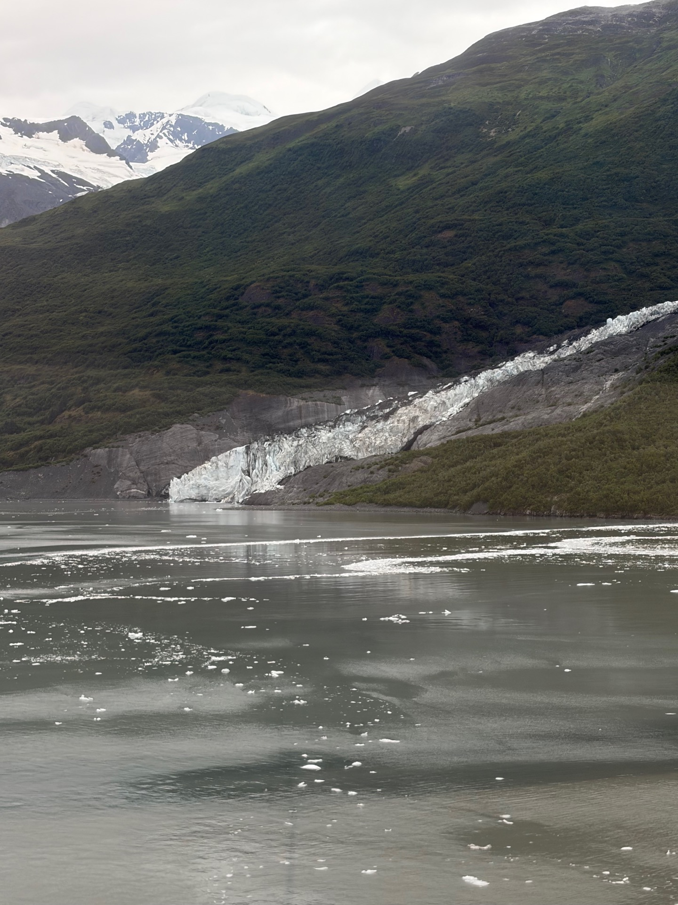
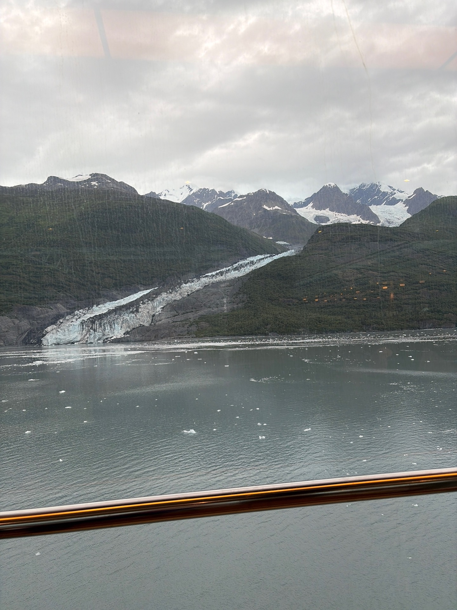
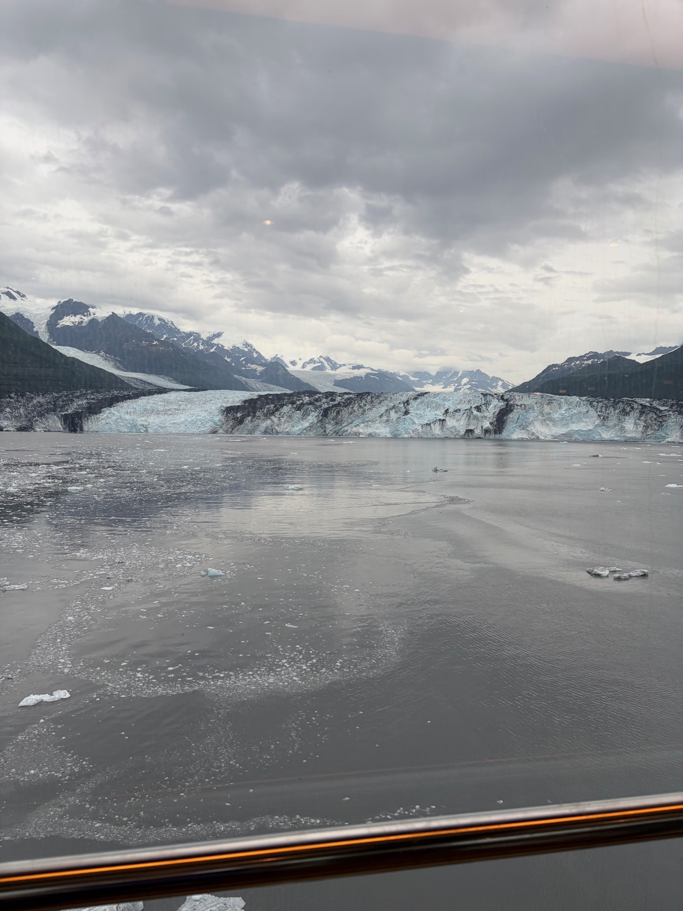
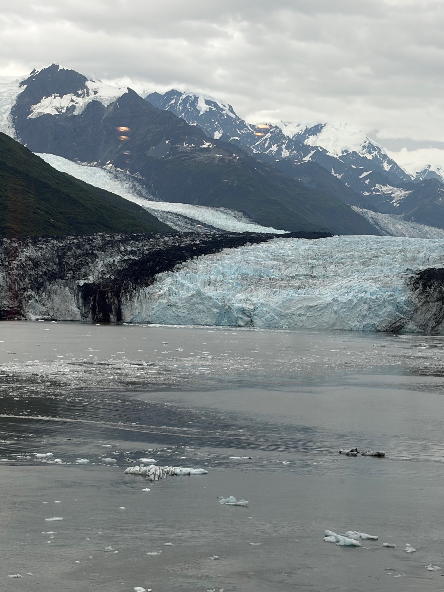
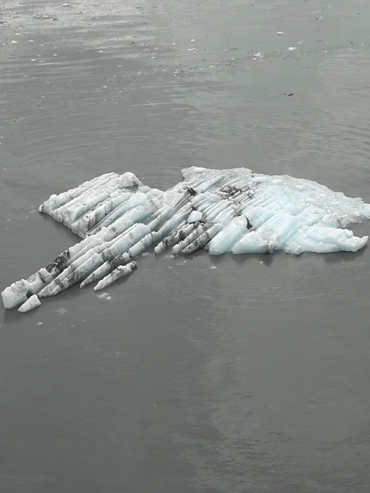
Floating around the ship were what the seafarers call bergy bits — chunks of glacier ice roughly the size of a house, broken free and drifting. Too small to qualify as true icebergs by the official measure, but tell that to someone standing next to one. They glowed with that same deep blue as the glaciers that birthed them, ten thousand years of compressed snow rendered in light.
Prince was fascinated. Snow admired them from a comfortable distance, safely indoors.